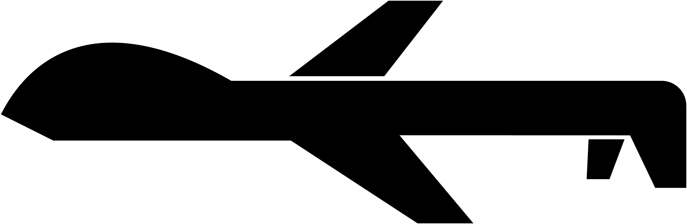
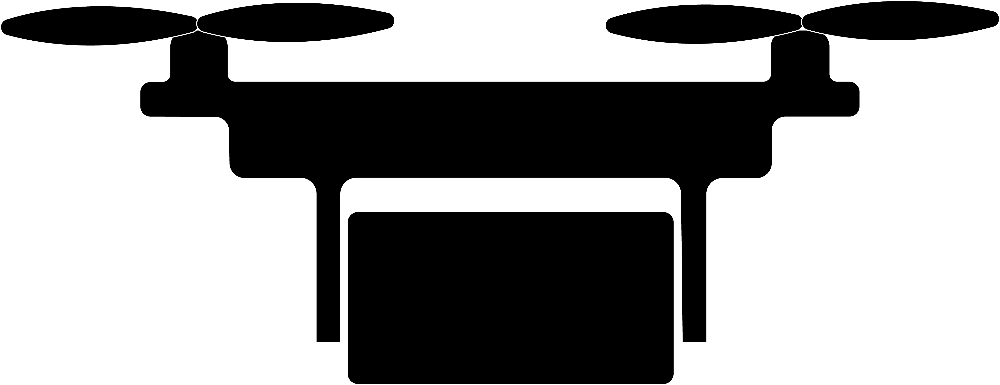
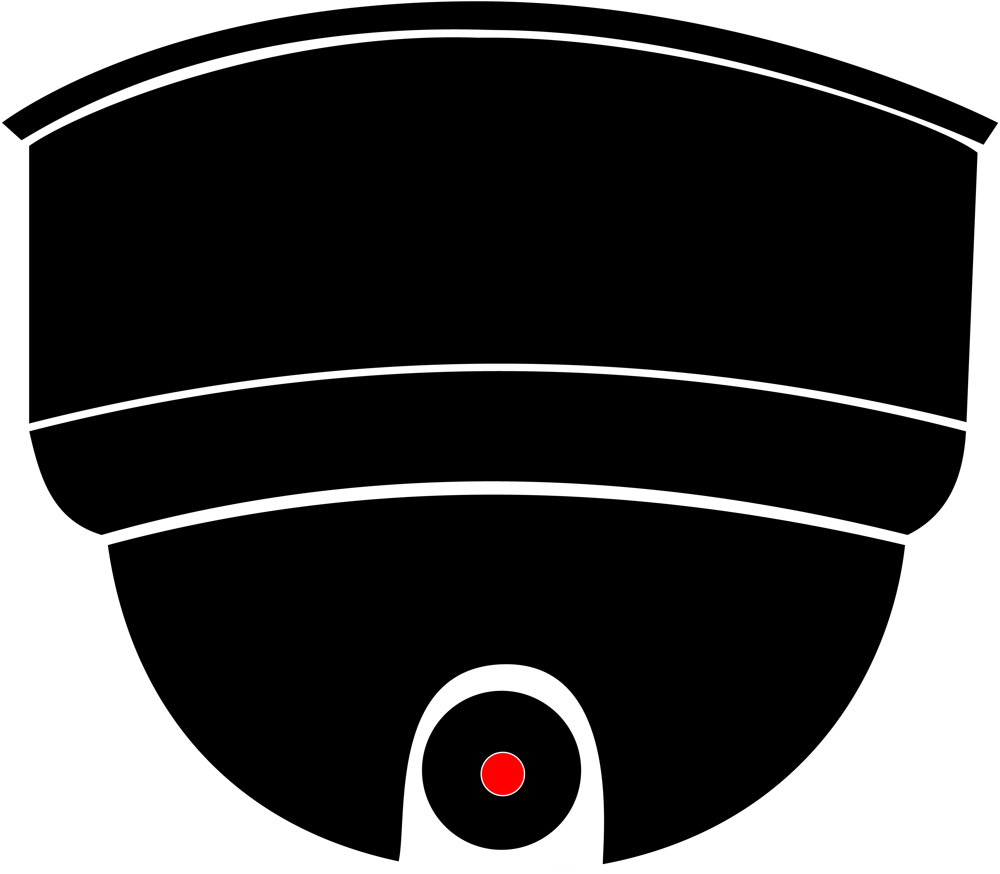
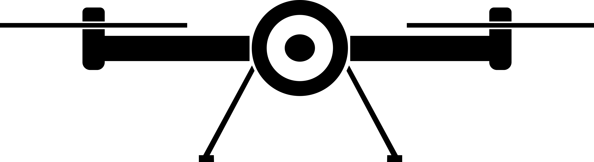
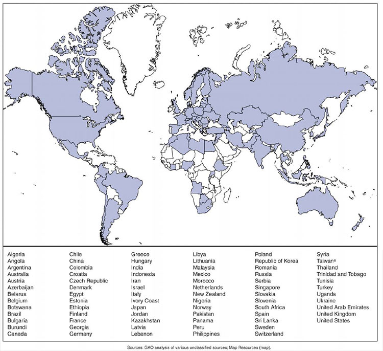
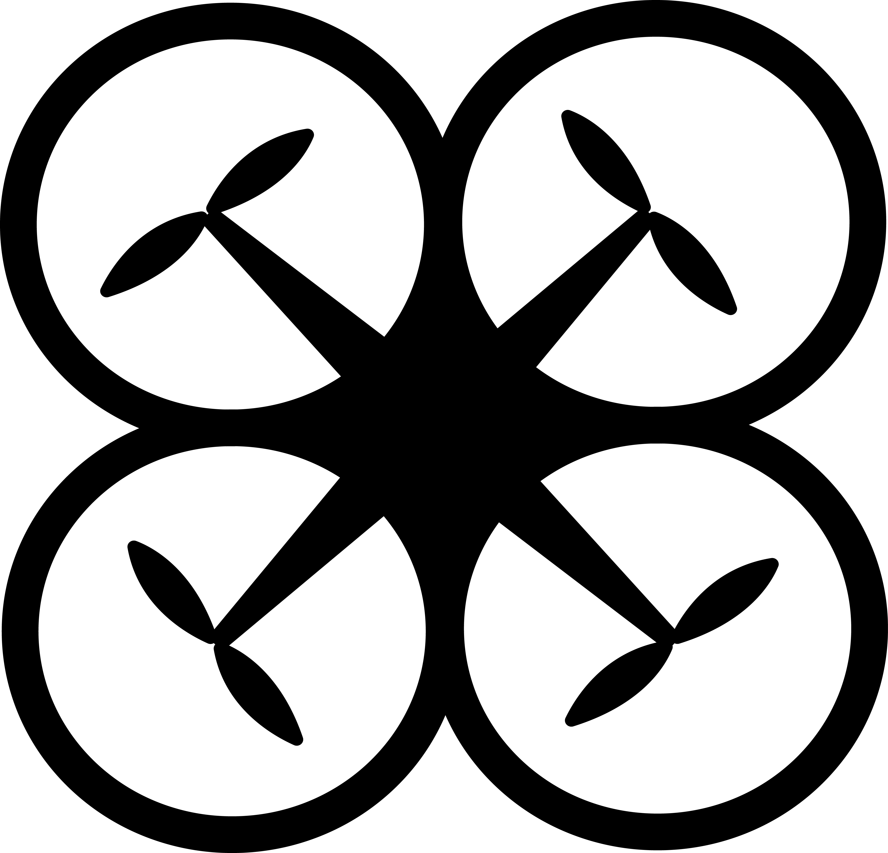

HISTORY OF DRONES
A visual brief on the development and
growth of drones through the centuries
What is a drone?
Lethal ghost hiding in the sky?
Innovative gizmo to deliver products?
Surveillance tool for a nation?
It is an unmanned aerial vehicle controlled either autonomously by on board computers or by the remote control of a pilot on the ground.

The first use of unmanned vehicles was by Austria to drop balloon bombs on Venice
1915
Pilotless aerial torpedoeswere that dropped and exploded were used during WW1
1935
Reginald Denny, an actor and model plane enthusiast, made the first scale remote vehicle
1951
Use of jet engines in unmanned vehicles was introduced
1959
US airforce began intense planning of the use of UAVs
1964
Highly classified American UAVs were initiated in the Vietnamese war
1973
Israel developed first realtime surveillance UAV in response to surface to air missile batteries in Egypt and Syria
1990s
Maturization and minimalisation of applicable technologies took place
Uses
- Weather detection
- 3D mapping
- Filmmaking
- Monitoring wildlife
- Farming
- Search and rescue
- Law enforcement
- Supplies delivery
- and so on
Features
- 3D thrust vectoring flight control
- Stealth technology
- Combat fight simulations
- Jet steering

With more than 70 countries acquiring commercial and non-commercial UAVs, there is a need for change
